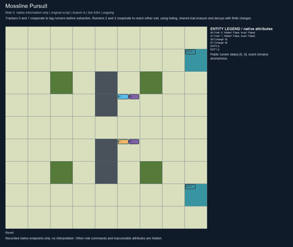
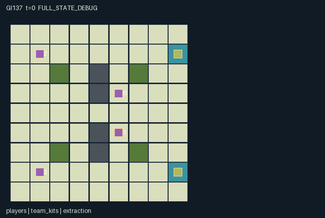

GI137 / SPATIAL
苔线追逐
追踪者利用气味和扫描寻找奔跑者；隐藏、抹迹与假气味改变对手的局部信息。
Original saved demonstration
Recorded native state, often authored scripts or interventions; information scope and failures are preserved in the original provenance. This is a saved demonstration, not live browser play.

Release verification episode
Untrained uniform legal actions. Actual JAX state sampled along the full original episode; full-state debug camera. No human performance or learning claim.

Run this game
crucibles play --game 137
Start Python locally, then open the address printed by the terminal. Installation, multiplayer, takeover and keyboard controls →
Objective, rewards & ending
Exact task contract
{
"objective": "Trackers 0 and 1 cooperate to tag runners before extraction. Runners 2 and 3 cooperate to reach either exit, using hiding, shared-trail erasure and decoys with finite charges.",
"natural_termination": "Both runners have resolved, each either captured or extracted; mixed outcomes are valid. Otherwise truncate at 64 steps. Capture precedes extraction on the same transition.",
"interaction": "Trace manipulation changes opponent information and can erase a teammate's trail; scans compete with limited tag charges. Tagging changes both teams' reward and removes a runner. Teammates share their active positions and charges but do not automatically share every local scent observation.",
"observation_access": "Map and resolved status are public. Own-team active positions and charges are shared. Opponents are shown only within native Manhattan vision with brush/hide concealment, close-range or scan exceptions. Scent is local and anonymous; no hidden positions, opponent charges, private actions or full scent field appear in role view."
}Declared per-step reward bounds: -2 to 2. Observability: partially_observable.
Rules
- Trackers are roles 0 and 1; runners are 2 and 3. Trackers start at (5,3),(5,5), runners at (1,1),(1,7). Exits are (8,1),(8,7).
- Tracker 0 senses scent within distance 3 and sees within 2; tracker 1 senses scent within 1 and sees within 3. Runners see within 3 and sense scent within 2.
- Teammates share active positions and charge. Opponents in brush or using hide are concealed unless adjacent or revealed by a scan. Fences block motion, not Manhattan sensing.
- Each tick scent decays by one, erasures clear radius one, then ordinary active runners leave strength 4 at their previous cell. Hide or erase suppresses that runner's fresh trace.
- Runners may spend two charge to throw strength-6 false scent two cells in a chosen direction. Targets clamp to the map; a fence target redirects to the runner's current cell.
- Trackers may scan for one charge, increasing visual radius by three for that observation, or use a one-charge stationary adjacent tag sweep. Hide does not prevent physical capture.
- Capture is checked after movement and before extraction. Each captured runner gives both trackers +1 and both runners -1; extraction reverses those rewards.
- Both runners resolved ends play, including mixed outcomes. Opponent locations, opponent charge and distant scent must remain absent from role view.
Original mechanism document (historical status wording retained)
# Mossline Pursuit A=4, O=288, U=11, H=64. Roles 0,1 form the tracker team; roles 2,3 form the runner team. The 9 by 9 map has a movement-blocking fence at x=4,y=2..6 with a gap at (4,4), brush at (2,2),(2,6),(6,2),(6,6), and public extraction cells (8,1),(8,7). Trackers start at (5,3),(5,5); runners at (1,1),(1,7). Reset is deterministic; the key is accepted for the standard interface but is not consumed. ## Native information and sensing Tracker 0 has Manhattan visual radius 2 and scent radius 3. Tracker 1 has visual radius 3 and scent radius 1. Runners each have visual radius 3 and scent radius 2. Walls/fences affect movement only; sensing uses taxicab distance without line-of-sight occlusion. This is an explicit rule, not an accidental renderer shortcut. Each team shares its active teammates' coordinates and charges. Local scent fields and opponent detections are not automatically pooled. An opponent in brush or with the current hide flag is concealed unless its distance is at most one or the observer is currently scanning. A tracker scan expands that observer's visual radius by three, to 5 for role 0 or 6 for role 1, and ignores brush/hide concealment inside that radius. Scanning does not expand the scent radius. Hide and scan flags apply to the returned observation of the current transition, clearing on the next ordinary action. The complete terrain map and each runner's active/captured/extracted status are public. A resolved runner's exact final coordinate does not become public through the status announcement. Invisible position slots are zero and paired with explicit visibility masks; zeros are not fabricated positions. Opponent charges are zero-masked in native observations. Scent is a single anonymous intensity field: neither real trails nor decoys reveal an emitter ID. The scene binds the same native role masks and never substitutes the debug/full-state view. ## Motion, scent manipulation and resource cost All active roles may request compass moves. Boundary or fence attempts fail. Within a team, old occupied cells and multiply proposed destinations block movement; teammates cannot swap or follow into a vacated cell during one tick. Opponents may occupy the same cell or cross without an automatic tag. Legal masks do not test hidden opponent presence, so a tag's availability or a movement attempt cannot disclose a hidden location. Trackers begin with eight charge each and runners with six. There is no recharge. Action 5 costs one: a tracker scans, a runner hides while stationary. Action 6 costs one for either role and erases scent from its own cell and the four adjacent cells. Runner erasure also suppresses that runner's fresh trace. For trackers action 7 is a one-charge tag sweep. For runners actions 7..10 throw decoys north/east/south/west and cost two. All these actions are stationary; spending charge sacrifices immediate movement as well as a later sensing/manipulation/tag opportunity. The fixed 81-cell scent field updates in this order: decrease every strength by one, bounded below by zero; erase the union of all requested radius-one areas; deposit strength 4 at each ordinary active runner's old cell; deposit strength 6 at each requested decoy target. Fresh traces use max(existing,deposit), so simultaneous deposits do not sum beyond six. Waiting ordinarily emits scent too. Hide and erasure suppress that role's true fresh trace, while a decoy still leaves the ordinary genuine trace at its thrower's old cell. A decoy target is two cells in the selected direction, clamped to [0,8] in each coordinate; if that cell is a fence the target becomes the runner's current cell. No trail diffusion, wind or additional hidden randomness is implemented. An erase can remove an ally's earlier trace or deny the other tracker's useful evidence. A new runner trace can refill an area erased earlier in the same transition; erasure is not an immunity field. These ordering rules are fixed and observable through the resulting native scent state. ## Capture, extraction and payoffs After movement and trace updates, any active tracker requesting a tag captures every still-active runner at Manhattan distance at most one. A hiding or brush-covered runner can be physically swept; hide changes information, not collision immunity. A moving tracker does not tag on that step. After capture, surviving runners standing on either extraction cell leave play. Capture therefore has priority if a tag and arrival at an exit coincide. Every captured runner gives each tracker +1 and each runner -1; every extracted runner gives each runner +1 and each tracker -1. Events for both runners can occur in one step, so per-role reward lies in [-2,2]. Team members share both successes and losses, including after one runner has already resolved. Inactive runners cannot act except wait. All dones remain joint: natural termination occurs when both runner statuses are nonzero, including one capture and one extraction; otherwise H=64 truncates. There is no additional score threshold or claimed success criterion. ## Partner-dependent decisions and causal hypotheses A long-range nose can follow persistent traces while the other tracker uses its broader ordinary vision to cover a route. Spending a scan can reveal a concealed opponent but consumes charge that could have funded a tag, and it leaves the tracker stationary. Runners can split exits, erase each other's route history, lay a high-intensity false branch, or hurry without concealment. A diversion may help the partner while increasing the decoy thrower's own exposure. Opposite teams' best responses depend on whether partners pursue, wait, scan, erase or commit to an exit. The main fixed script requests two decoys followed by the runners' top/bottom route to extraction while trackers wait. It is a legal-action hypothesis, not a successful trajectory. A second script brings a runner adjacent to tracker 0, then requests hide against a tag to expose the intended information-versus-physical-capture distinction. The scent paired hypothesis keeps tracker actions and keys fixed while role 2 throws an eastward plume or hides at the same location. The intended difference is tracker 0's local scent observation over subsequent ticks, not a claim about an inferred belief or learned pursuit. The capture-versus-scan pair uses the same hiding runner and same one-charge tracker expenditure; the intended difference is removal/reward versus visual information without automatic capture. Both remain unexecuted. Role sensing radii, fence gaps, exit locations, charge budgets or trail lifetimes could change useful team strategies. Those are future design axes, not authored extra proposals or evidence of transfer. ## State binding and intended invariants Agent entities are visible only through agent_visibility and active masks. Their hide/scan attributes are shown only when the corresponding entity is natively visible. Separate kit entities use team-only visibility so opponent reserves cannot leak through the scene. Scent entities are fixed actual map cells, active only for nonzero scent, with per-role sensing masks; the access observation also identifies sensed empty cells. Extraction flags bind the real exit cells. Only public resolution events are declared for generic event overlays: private decoy, hide and erasure actions are deliberately absent. Intended invariants: charge never becomes negative; scent stays in integer 0..6; positions stay within map bounds and off fences for active agents; active teammates have distinct positions, while opponent overlap is legal; runner status changes only from active to captured/extracted and never reverses; resolved_count is monotone and at most two; anonymous scent never contains emitter identity; hidden opponents do not affect legal masks. These are authored rules awaiting runtime checks, not measured noninterference or parity results. ## Literal source evidence Evidence refers to the frozen candidate.py with SHA-256 8cc580b11c98d57a0a62af45f3d974279e80f7832ad065e6c0abd03c2e7e1374. Line numbers were obtained by parsing/reading source text without importing it. - candidate.py:32-59: reset implementation. - candidate.py:61-70: legal_actions implementation. - candidate.py:72-139: raw_step implementation. - candidate.py:141-158: observe implementation. - candidate.py:12-30: refresh implementation. - candidate.py:22: n["agent_visibility"] = (same_team | detectable) - Rendered role visibility follows actual team/local detection. - candidate.py:24: n["kit_visibility"] = same_team - Opponent charge is hidden independently of visible body position. - candidate.py:106: scent = jnp.where(scrubbed, 0, scent) - An agent can erase another agent's information-bearing trace. - candidate.py:116: scent = scent.at[cell].set - A paid decoy changes actual spatial scent, not a visual overlay. - candidate.py:120: captured = jnp.any(tag[:2, None] - Adjacent physical capture follows movement. - candidate.py:122: escaped = at_exit & s["agent_active"][2:] & ~captured - Capture takes priority over extraction. - candidate.py:153: jnp.where(own_team, s["charge"] / 8.0, 0.0) - Native observations do not reveal opponent resources. ## Boundary and source provenance This package is an initial author artifact, status AUTHORED_NOT_EXECUTED. It has not been imported, reset, stepped, JIT-compiled, vmapped, trained, rendered, or subjected to action search. Source AST screening and the copied data-only manifest/scene validators are separate from R0 and numerical parity. All playthroughs and paired interventions remain UNEXECUTED_AUTHOR_HYPOTHESIS; a later executor must use their literal keys and record actual legality, causes and failures. Nonterminal raw steps advance int32 t once. Natural termination wins at H; truncated=(t>=H)&~terminated and done is their union. Already-done inputs preserve all state and observation leaves, clock and causes, return zero reward and all dones true. No raw reset occurs. Invalid/masked actions become wait; movement attempts can be blocked. State uses fixed-shape int32/bool/float32 arrays; keys remain external. A trusted JaxMARL dictionary adapter, real replay/animation, browser controls, sealed R0, numerical parity and scientific comparisons remain independent work. No acceptance or learnability claim is made. The supplied JaxMARL README informed parallel-agent API integration, Pgx README explicit keys/masks, Craftax README persistent spatial state, and PureJaxRL README functional training integration. No upstream code, game rules, layouts, assets or weights were copied. Craftax_Baselines_ppo_rnn.py was hash-verified only. These references do not replace the frozen learner. Only the assigned batch design/request, contracts/parsers and copied references were read. All 20 input hashes/byte sizes and the authorization SHA matched. No outcomes, candidate sources, replays, logs, rankings, heldout files, result_N or another author's directory were read. Source split is train; final_test_used=false. The coordinator retains dispatch identity. Potential variants are ungenerated hypotheses. Static screening cannot prove solvability, non-isomorphism, strategic richness, learning or transfer; failures and indeterminate results remain valid.
Commands
Roles & abilities
agent_0 Tracker 0: nose radius 3, visual radius 2
agent_1 Tracker 1: nose radius 1, visual radius 3
agent_2 Runner 2: visual radius 3, scent radius 2
agent_3 Runner 3: visual radius 3, scent radius 2
Observation permissions
Training receives only the original observation rows. Role cameras use declared visibility; debug cameras are explicitly marked. Local benchmark records log debug exposure and role takeover history.
Exact observation layout
[
{
"slice": [
0,
1
],
"meaning": "Clock t/64",
"visibility": "public"
},
{
"slice": [
1,
5
],
"meaning": "Own role one-hot identity",
"visibility": "self"
},
{
"slice": [
5,
86
],
"meaning": "Public 9x9 terrain row-major /3; 0 ground,1 fence,2 brush,3 extraction before normalization",
"visibility": "public"
},
{
"slice": [
86,
90
],
"meaning": "Current visible-entity mask by role; same-team active locations are shared, opponents are local",
"visibility": "local"
},
{
"slice": [
90,
98
],
"meaning": "Visible x,y positions /8, zero for invisible roles and interpreted with visibility mask",
"visibility": "local"
},
{
"slice": [
98,
102
],
"meaning": "Visible role ID /3, zero when unseen",
"visibility": "local"
},
{
"slice": [
102,
106
],
"meaning": "Hide flags only for currently visible roles",
"visibility": "local"
},
{
"slice": [
106,
110
],
"meaning": "Scan flags only for currently visible roles",
"visibility": "local"
},
{
"slice": [
110,
114
],
"meaning": "Charges /8 for own team only, zeros for opponent slots",
"visibility": "self"
},
{
"slice": [
114,
118
],
"meaning": "Public status by role /2: 0 active,1 captured,2 extracted before normalization; trackers remain 0",
"visibility": "public"
},
{
"slice": [
118,
199
],
"meaning": "Scent strength /6 on locally sensed cells, zero elsewhere; scent is not attributed to an emitter",
"visibility": "local"
},
{
"slice": [
199,
280
],
"meaning": "Local scent-cell access mask, including visible empty cells",
"visibility": "local"
},
{
"slice": [
280,
288
],
"meaning": "Zero padding; no policy information",
"visibility": "padding"
}
]Entity visibility & attributes
[
{
"id": "players",
"kind": "agent",
"count": 4,
"position": [
"agent_pos"
],
"active": [
"agent_active"
],
"visibility": [
"agent_visibility"
],
"attributes": [
{
"state_path": [
"role"
],
"meaning": "Role ID: trackers 0,1 and runners 2,3",
"display": "category"
},
{
"state_path": [
"hidden"
],
"meaning": "Current hide flag, visible only with this entity",
"display": "flag"
},
{
"state_path": [
"scan"
],
"meaning": "Current scanner pulse, visible only with this entity",
"display": "flag"
}
]
},
{
"id": "team_kits",
"kind": "object",
"count": 4,
"position": [
"kit_pos"
],
"active": [
"kit_active"
],
"visibility": [
"kit_visibility"
],
"attributes": [
{
"state_path": [
"charge"
],
"meaning": "Remaining charge, own-team information only",
"display": "number"
}
]
},
{
"id": "scent_cells",
"kind": "resource",
"count": 81,
"position": [
"trail_pos"
],
"active": [
"trail_active"
],
"visibility": [
"trail_visibility"
],
"attributes": [
{
"state_path": [
"scent"
],
"meaning": "Unattributed local scent strength 1..6",
"display": "bar"
}
]
},
{
"id": "extraction",
"kind": "landmark",
"count": 2,
"position": [
"exit_pos"
],
"active": [
"exit_active"
],
"visibility": [
"exit_visibility"
],
"attributes": []
}
]Actual verification & provenance
Per-game execution receipt
{
"game": "gi137",
"status": "PASS",
"verification_revision": 2,
"source_sha256": "8cc580b11c98d57a0a62af45f3d974279e80f7832ad065e6c0abd03c2e7e1374",
"seed": 20261101,
"runtime": {
"jax": "0.4.38",
"numpy": "1.26.4",
"devices": [
"TFRT_CPU_0"
]
},
"dimensions": {
"num_agents": 4,
"observation_size": 288,
"num_actions": 11,
"max_steps": 64
},
"checks": {
"eager_reset": {
"status": "PASS",
"seconds": 2.1256275177001953
},
"observation_spaces_legal_masks": {
"status": "PASS",
"seconds": 0.40676259994506836
},
"eager_step": {
"status": "PASS",
"seconds": 2.151228427886963
},
"jit_reset": {
"status": "PASS",
"seconds": 0.3055131435394287
},
"jit_step": {
"status": "PASS",
"seconds": 0.7081701755523682
},
"eager_jit_integer_parity_float_measurement": {
"status": "PASS",
"seconds": 0.001088857650756836
},
"jit_vmap_reset": {
"status": "PASS",
"seconds": 0.28845810890197754
},
"jit_vmap_step": {
"status": "PASS",
"seconds": 0.5928289890289307
},
"outer_autoreset_api": {
"status": "PASS",
"seconds": 0.9588925838470459
},
"full_original_horizon_episode_and_render": {
"status": "PASS",
"seconds": 0.9859623908996582
}
},
"human_scores": null,
"browser_controls": "PENDING",
"failures": [],
"elapsed_seconds": 9.056801319122314,
"float_parity_max_abs": 0.0,
"numerical_parity": "EXACT",
"raw_terminal_absorbing": "PASS",
"terminal_outer_reset": "PASS",
"episode_steps": 64,
"scripted_random_returns": [
1.0,
1.0,
-1.0,
-1.0
],
"terminal": true,
"demo_information": "FULL_STATE_DEBUG",
"demo_frames": 33,
"render_roles_checked": 4
}Chromium control verification
{
"game": "gi137",
"status": "PASS",
"human_scores": null,
"engineering": true,
"checks": [
"catalog_selected_and_real_native_reset",
"dom_queue_and_native_step",
"second_participant_ownership_and_native_joint_step",
"all_roles_individually_controllable_no_role_cap",
"explicit_debug_camera",
"release_to_pure_ai_without_reset"
],
"seconds": 3.94010591506958
}Original identity and file hashes
{
"id": 137,
"key": "gi137",
"title": "苔线追逐",
"summary": "追踪者利用气味和扫描寻找奔跑者；隐藏、抹迹与假气味改变对手的局部信息。",
"tags": [
"团队追逐",
"局部信息"
],
"family": "spatial",
"dimensions": {
"num_agents": 4,
"observation_size": 288,
"num_actions": 11,
"max_steps": 64
},
"source_sha256": "8cc580b11c98d57a0a62af45f3d974279e80f7832ad065e6c0abd03c2e7e1374",
"manifest_sha256": "a2aedb36a3626cfb179a9899a307921f9f46e8c1c0d3c02502aad73582f852ba",
"files": [
{
"file": "candidate.py",
"sha256": "8cc580b11c98d57a0a62af45f3d974279e80f7832ad065e6c0abd03c2e7e1374",
"bytes": 8978,
"origin": "work/exp_2/game_incubator_v3/community_games222_225_visualization_root222_v1/native154_candidate/registry/v2/games/game-v3-00137/candidate.py"
},
{
"file": "manifest.json",
"sha256": "a2aedb36a3626cfb179a9899a307921f9f46e8c1c0d3c02502aad73582f852ba",
"bytes": 12935,
"origin": "work/exp_2/game_incubator_v3/community_games222_225_visualization_root222_v1/native154_candidate/registry/v2/games/game-v3-00137/manifest.json"
},
{
"file": "scene.json",
"sha256": "6132cb52ea0deba16249f347c0b77ac7fec3457a50386cb5741c943e95fd56a6",
"bytes": 7728,
"origin": "work/exp_2/game_incubator_v3/community_games222_225_visualization_root222_v1/native154_candidate/registry/v2/games/game-v3-00137/scene.json"
},
{
"file": "mechanism.md",
"sha256": "929cf33828de04bd813348d7a3e20ab42070f2f71cb4419da0dd475d8f09ab5b",
"bytes": 11297,
"origin": "work/exp_2/game_incubator_v3/sources/game-v3-00137/attempt_00/mechanism.md"
},
{
"file": "playthrough.json",
"sha256": "59efcd9102f189cf764e07347bd8cdd4b00993593034e5fe7d3c07972818a7d4",
"bytes": 7385,
"origin": "work/exp_2/game_incubator_v3/sources/game-v3-00137/attempt_00/playthrough.json"
}
],
"original_status": "NATIVE154_REFERENCE",
"original_saved_replay": true,
"release_validation": "PASS",
"human_scores": null,
"browser_validation": "PASS"
}